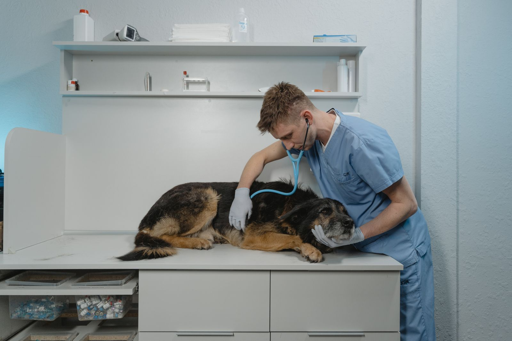
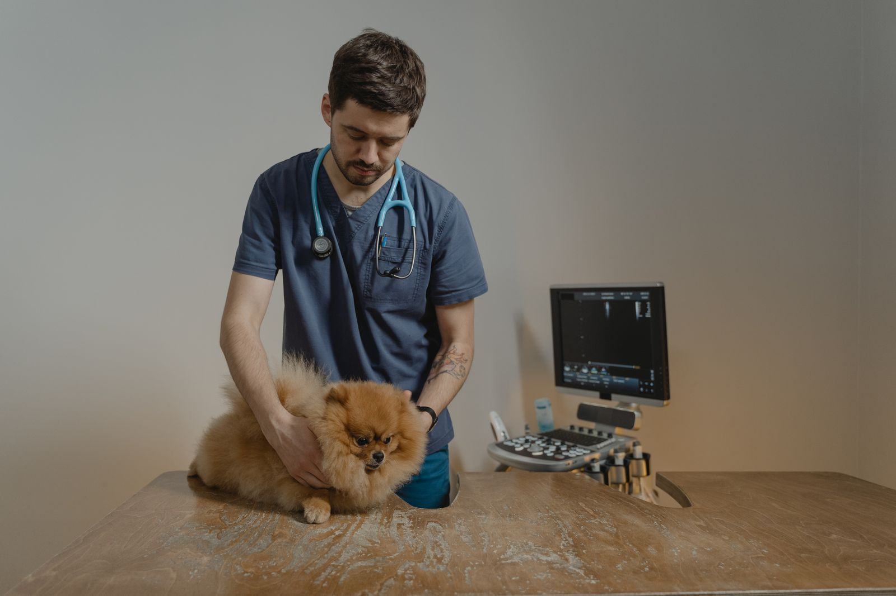

Spokojna, troskliwa opieka dla Twojego pupila
Gabinet weterynaryjny lek. wet. Katarzyny Przewoskiej-Stoltmann. Leczymy i chronimy psy oraz koty. Bez pośpiechu, z czasem na Twoje pytania.
- Psy i koty
- Wizyty po umówieniu
- Szczepienia i czipowanie

Usługi
W czym możemy pomóc
Od pierwszego szczepienia szczeniaka po opiekę nad seniorem. Zadbamy o zdrowie Twojego zwierzaka na każdym etapie życia.
-
Konsultacje i badania
Badanie ogólne, porada przy niepokojących objawach, kontrola po leczeniu.
-
Szczepienia i odrobaczanie
Szczepienia ochronne i przeciw wściekliźnie, profilaktyka przeciw pasożytom.
-
Czipowanie i paszporty
Wszczepienie czipa, rejestracja oraz paszport do podróży z pupilem.
-
Diagnostyka
Badania krwi i moczu, diagnostyka chorób skóry, uszu i przewodu pokarmowego.
-
Profilaktyka i seniorzy
Coroczne przeglądy zdrowia, opieka nad starszymi zwierzętami, porady żywieniowe.
-
Zabiegi
Kastracja i sterylizacja, zabiegi drobne, opatrywanie ran i zdejmowanie szwów.



Pierwsza wizyta
Jak wygląda wizyta krok po kroku
Umawiasz termin
Zadzwoń albo zostaw wiadomość w formularzu. Oddzwonimy i ustalimy dogodną godzinę.
Spokojne badanie
Rozmawiamy o objawach i nawykach pupila, a potem dokładnie go badamy, bez pośpiechu.
Jasny plan leczenia
Wyjaśniamy diagnozę i dalsze kroki. Dostajesz zalecenia na piśmie i wiesz, czego się spodziewać.
O mnie
lek. wet. Katarzyna Przewoska-Stoltmann
Prowadzę gabinet w Gdyni, w którym każdy pacjent jest traktowany indywidualnie. Wiem, jak ważny jest dla Ciebie Twój pies czy kot, dlatego stawiam na spokojną atmosferę, dokładne badanie i zrozumiałe wyjaśnienia.
- Czas na każdą wizytę
- Zrozumiałe wyjaśnienia
- Łagodne podejście do zwierząt
- Gabinet blisko Ciebie, w Gdyni
Pytania
Najczęściej zadawane pytania
Gdzie znajdę dobrego weterynarza w Gdyni?
Gabinet Weterynaryjny lek. wet. Katarzyny Przewoskiej-Stoltmann mieści się w Gdyni przy ul. Górnej. Przyjmujemy psy i koty: konsultacje, szczepienia, czipowanie, diagnostykę i drobne zabiegi.
Czy trzeba się wcześniej umówić?
Tak, przyjmujemy po wcześniejszym umówieniu. Dzięki temu nie czekasz w poczekalni, a my mamy czas na spokojne badanie. Zadzwoń albo wypełnij formularz poniżej.
Kiedy zaszczepić szczeniaka lub kociaka?
Pierwsze szczepienia wykonuje się zwykle w wieku kilku tygodni, a potem według kalendarza szczepień. Na pierwszej wizycie ustalimy plan dopasowany do Twojego zwierzaka.
Co zabrać na pierwszą wizytę?
Książeczkę zdrowia lub paszport (jeśli zwierzę je ma), wyniki wcześniejszych badań i listę podawanych leków. Kota najlepiej przywieźć w transporterze, psa na smyczy.
Czy wyrobicie paszport dla psa lub kota?
Tak. Wszczepiamy czip, rejestrujemy zwierzę i wydajemy paszport potrzebny do podróży za granicę.
Kontakt
Umów wizytę
Zostaw wiadomość, a oddzwonimy, żeby ustalić termin. W pilnych sprawach najlepiej zadzwonić.
- Adres
- ul. Górna, Gdynia
- Godziny przyjęć
- Pon – Pt9:00 – 18:00Sobota9:00 – 13:00Niedzielanieczynne
Godziny przykładowe – do potwierdzenia